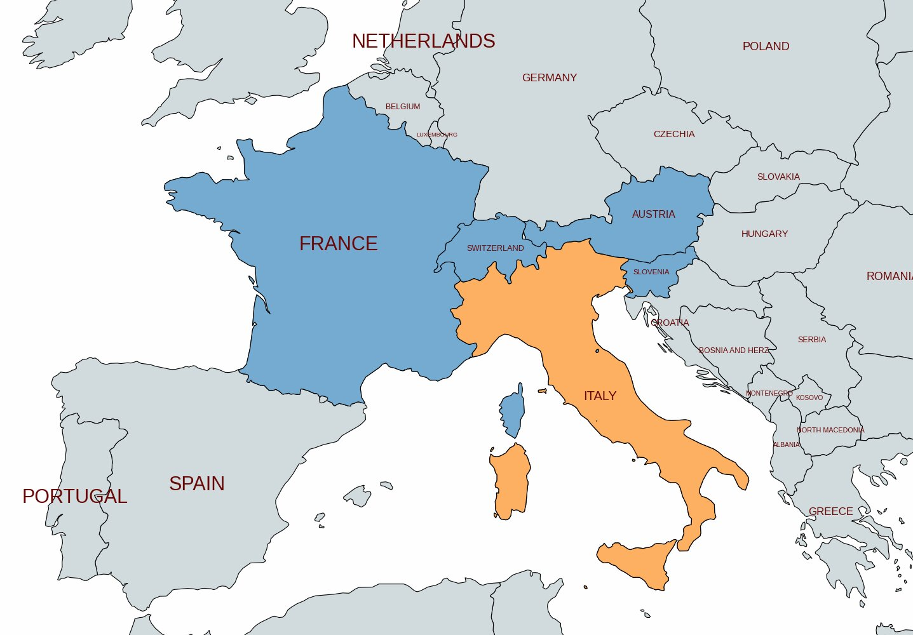
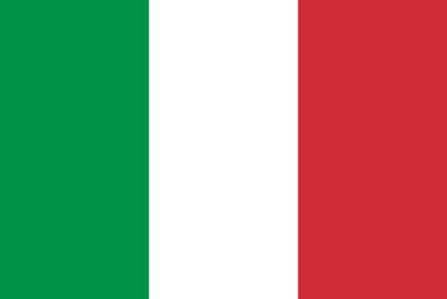
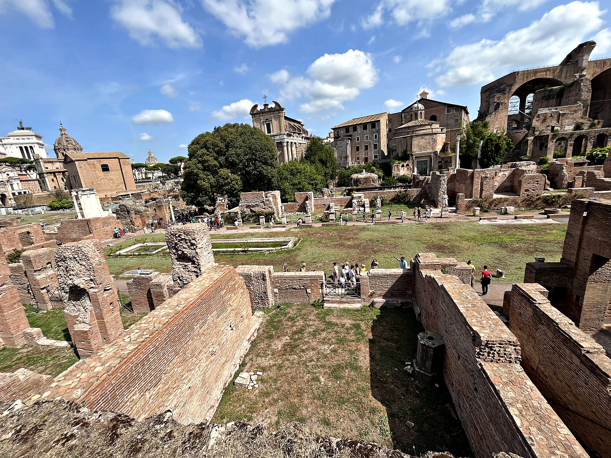
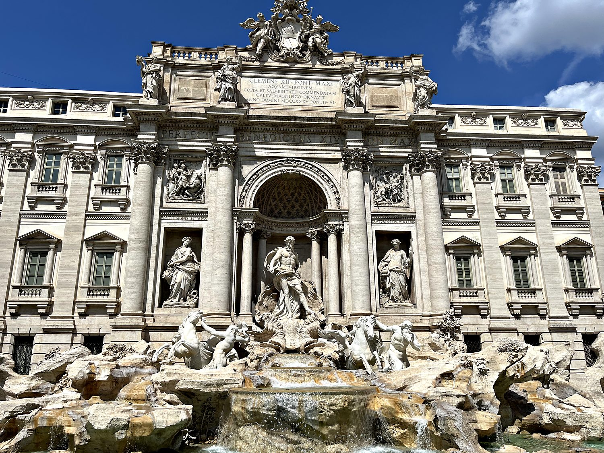
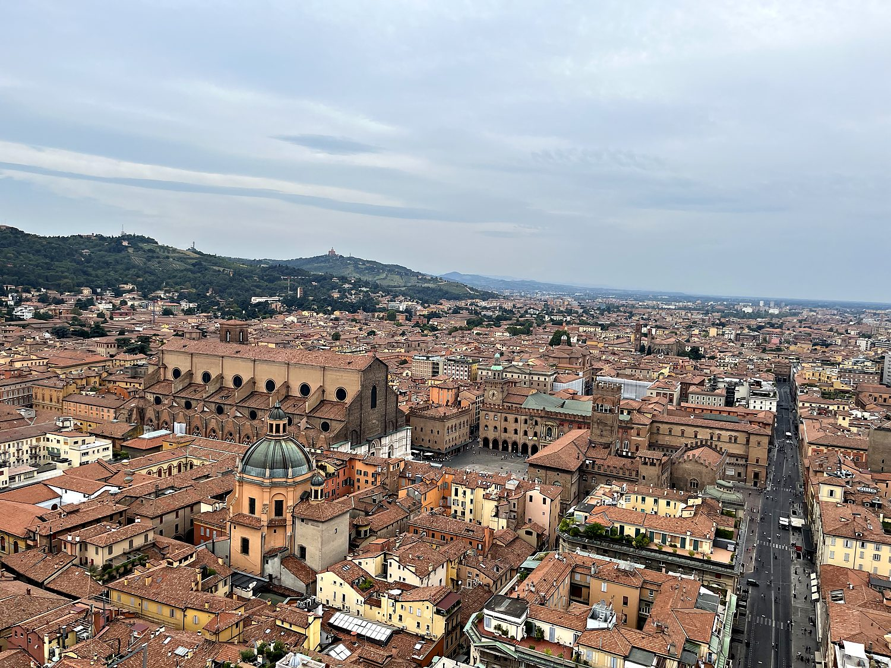

I traveled through Italy in August 2023 with my friend Gabriel, splitting our time between Bologna in the north and Rome, the eternal capital. It is a strange and wonderful thing to move through a country where roughly two and a half thousand years of history are stacked on top of one another in plain view. I would round a corner from a packed, gelato-scented tourist street into a silent alley, and then round another to find a 2,000 temple casually wedged between apartment blocks. Italy is almost unfairly rich in ruins, in art, in architecture, and (I say this with the authority of someone who ate a genuinely life-altering amount of pasta and pizza) in food. It is the kind of place where you could spend a lifetime and still feel like you had only scratched the surface.
My trip began in Bologna, the handsome capital of the Emilia-Romagna region, nicknamed la rossa (“the red”) for its terracotta rooftops and warm ochre buildings. It is a city famous for three things: its 25 miles of covered medieval porticoes, its food (this is the home of Bolognese sauce, tortellini, and mortadella), and its university, founded in 1088 and considered the oldest continuously-operating educational institution in the Western world. I climbed the leaning Asinelli Tower for a sweeping view over the red roofs, walked the porticoes out to the hilltop Basilica of San Luca, and lingered in the grand Piazza Maggiore. Then came Rome, a sprawling, chaotic, magnificent open-air museum where the ruins of the ancient empire, the domes of the Renaissance and Baroque, and the noise of modern Italian life all press together into one unforgettable whole.

Few places have shaped Western civilization as profoundly as Italy. It was here, according to legend in 753 BC, that Rome was founded, growing from a small settlement on the Tiber into a republic and then an empire that at its height ruled the entire Mediterranean world. Its law, language, engineering, and roads soon formed the bedrock of European civilization. When the Western Roman Empire finally collapsed in 476 AD, the peninsula fractured into a patchwork of competing city-states, duchies, and papal territories. Yet out of that fragmentation came a second world-changing flowering: the Renaissance, which gave the world Leonardo, Michelangelo, and a rebirth of art and learning.

For all its cultural glory, Italy did not become a single unified country until surprisingly recently. For centuries the peninsula remained divided and frequently ruled by foreign powers, until the 19th-century movement known as the Risorgimento. During this time, figures like Garibaldi, Cavour, and King Victor Emmanuel II finally stitched the many Italian states into one kingdom in 1861, with Rome becoming the capital a decade later. The 20th century brought darker chapters: the fascist dictatorship of Benito Mussolini and the devastation of World War II, after which Italians voted to abolish the monarchy and establish the republic that governs the country today. A founding member of the European Union, modern Italy remains one of the world's great cultural and economic powers.
If the Colosseum is ancient Rome's most famous monument, the Roman Forum was its beating heart. This sprawling complex of ruins of temples, basilicas, arches, and government buildings was the center of Roman public life for over a thousand years. It was where senators debated, crowds gathered, triumphs were celebrated, and the business of an empire was conducted. Walking past the towering columns of ruined temples and the arches raised to celebrate imperial victories felt surreal. With the Palatine Hill (the legendary birthplace of the city, which I took great pleasure in repeatedly and deliberately misnaming the “Palpatine Hill”) rising alongside, you are quite literally treading the ground where the Western political tradition was forged. It is humbling to stand among stones that were already ancient when much of Europe was still forest.

Leaping from antiquity to the Baroque, the Trevi Fountain is Rome's most exuberant piece of theater. It is a vast, gleaming white confection of sea gods, tritons, and rearing horses erupting from the wall of a palace, that was completed in 1762. It marks the end point of one of the ancient aqueducts that still supply water to the city, a neat reminder that Rome's engineering marvels never really went out of service. Tradition holds that if you toss a coin over your shoulder into its basin, you are guaranteed to return to Rome one day; so many visitors do so that thousands of euros are fished out daily and donated to charity. When I visited it was, predictably, jam-packed with tourists elbowing for the same photo.

Before Rome, there was Bologna, which deserves its own spotlight, because it is one of Italy's most underrated cities. Seen from the top of the Asinelli Tower, pictured here, the view is a sea of red-tiled rooftops broken by church domes and bell towers, with the green hills and the pilgrimage basilica of San Luca rising in the distance. Down at ground level, the city is defined by its endless porticoes, which are elegant covered walkways that let you cross much of the historic center without ever stepping into sun or rain. Bologna’s porticoes are so iconic that they were selected as a UNESCO World Heritage Site. Home to the Western world's oldest university and a food culture that gave rise to some of Italy's most beloved dishes, Bologna offers all the beauty of the great Italian cities with a fraction of the crowds.
